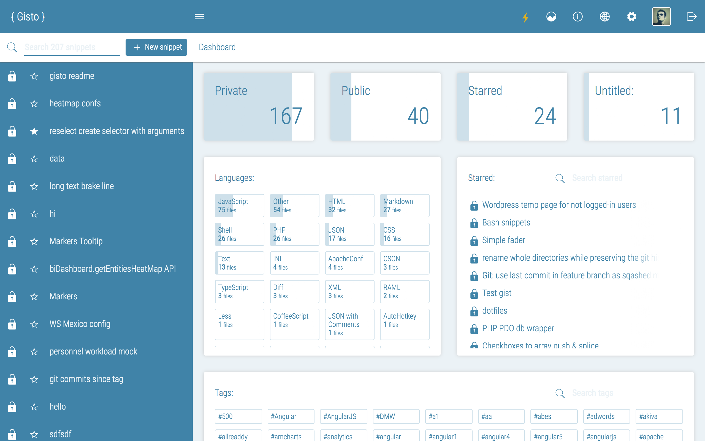

<section class="">

    <div class="under-nav">
        <h1>Snippets Made Awesome</h1>

        <div class="w-container">
            <div class="w-row">
                <div class="w-col w-col-6 w-clearfix not-a-player">
                    <p>Gisto is a code snippet manager that runs on GitHub Gists and adds additional features
                        such as searching, tagging and sharing gists while including a rich code editor.
                    </p>
                    <p>
                        All your data is stored on GitHub and you can access it from GitHub Gists at any time with changes
                        carrying over to Gisto.
                    </p>
                    <a href="https://github.com/Gisto/Gisto" class="btn bg-grey txt-white"><i class="fa fa-github"></i></a>
                    <a href="https://twitter.com/gistoapp" class="btn bg-grey twitter txt-white"><i class="fa fa-twitter"></i></a>
                    <a href="/changelog/" class="btn bg-grey txt-white">Changelog <i class="fa fa-arrow-right"></i></a>
                </div>

              <div class="w-col w-col-6 w-clearfix app-image">
                
              </div>

            </div>
        </div>

        <section class="boxes">
            <div class="w-container">
                <div class="w-row">
                    <a href="/features/" class="w-col w-col-4 w-clearfix box bg-grey txt-white uppercase">
                        <i class="fa fa-fire-extinguisher fa-4x pull-left"></i>

                        <h3>Features</h3>
                <span>
                    <i>List of features and new additions</i> <i class="fa fa-chevron-right"></i>
                </span>
                    </a>
                    <a href="#about" class="w-col w-col-4 w-clearfix box bg-greyer txt-white uppercase innsite">
                        <i class="fa fa-laptop fa-4x pull-left"></i>

                        <h3>Multi-platform</h3>
                <span>
                    <i>Available on Windows, Linux and OSX</i> <i class="fa fa-chevron-right"></i>
                </span>
                    </a>
                    <a href="#download" class="w-col w-col-4 w-clearfix box bg-tomato txt-white uppercase innsite">
                        <i class="fa fa-download fa-4x pull-left"></i>

                        <h3>Downloads <sup>v{% for v in site.releases %}
                          {% if forloop.first %}
                          {% assign current_version=v.version %}
                          {{ current_version }}
                          {% endif %}
                          {% endfor %}</sup></h3>
                <span>
                    <i>Mirrors, nightly builds and prev. versions</i> <i class="fa fa-chevron-right"></i>
                </span>
                    </a>
                </div>
            </div>
        </section>

        <div class="social w-clearfix">

            <a href="https://twitter.com/share" class="twitter-share-button" data-via="gistoapp"
               data-hashtags="gistoapp">Tweet</a>
            <script>!function (d, s, id) {
                var js, fjs = d.getElementsByTagName(s)[0], p = /^http:/.test(d.location) ? 'http' : 'https';
                if (!d.getElementById(id)) {
                    js = d.createElement(s);
                    js.id = id;
                    js.src = p + '://platform.twitter.com/widgets.js';
                    fjs.parentNode.insertBefore(js, fjs);
                }
            }(document, 'script', 'twitter-wjs');</script>

            <!-- Place this tag where you want the +1 button to render. -->
            <div class="g-plusone" data-size="medium"></div>

            <!-- Place this tag after the last +1 button tag. -->
            <script type="text/javascript">
                (function () {
                    var po = document.createElement('script');
                    po.type = 'text/javascript';
                    po.async = true;
                    po.src = 'https://apis.google.com/js/platform.js';
                    var s = document.getElementsByTagName('script')[0];
                    s.parentNode.insertBefore(po, s);
                })();
            </script>

            <iframe src="https://ghbtns.com/github-btn.html?user=gisto&repo=gisto&type=fork&count=true"
                    allowtransparency="true" frameborder="0" scrolling="0" width="95" height="20"></iframe>

            <iframe src="https://ghbtns.com/github-btn.html?user=gisto&repo=gisto&type=watch&count=true"
                    allowtransparency="true" frameborder="0" scrolling="0" width="95" height="20"></iframe>

            <div id="fb-root"></div>
            <script>(function (d, s, id) {
                var js, fjs = d.getElementsByTagName(s)[0];
                if (d.getElementById(id)) return;
                js = d.createElement(s);
                js.id = id;
                js.src = "//connect.facebook.net/en_US/all.js#xfbml=1";
                fjs.parentNode.insertBefore(js, fjs);
            }(document, 'script', 'facebook-jssdk'));</script>
            <div class="fb-like" data-href="https://gistoapp.com" data-layout="button_count" data-action="like"
                 data-show-faces="false" data-share="true"></div>

        </div>

        <h1>Features</h1>

    </div>

</section>
